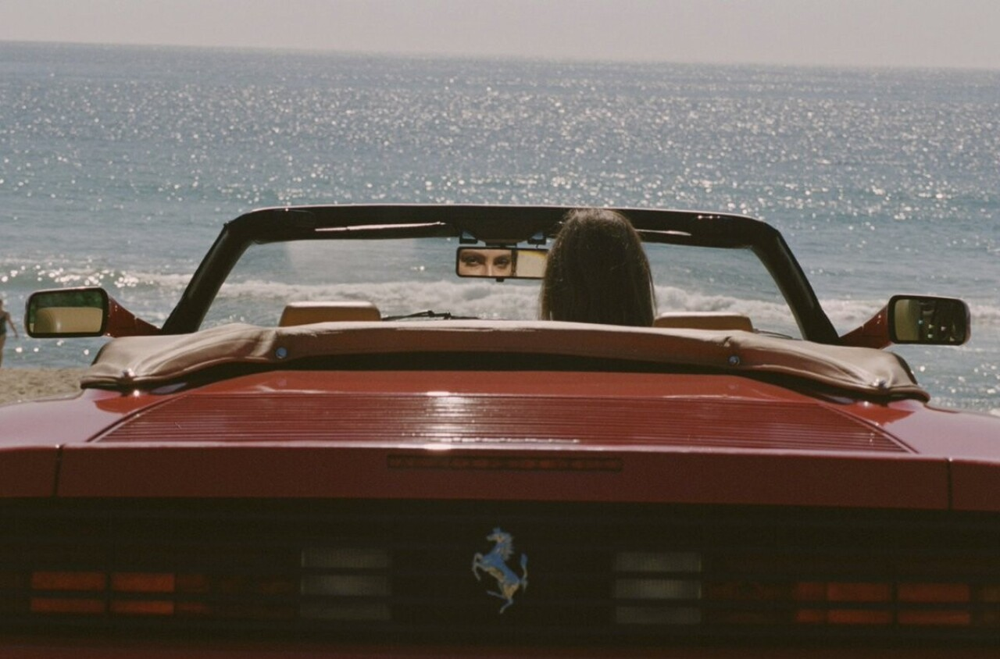
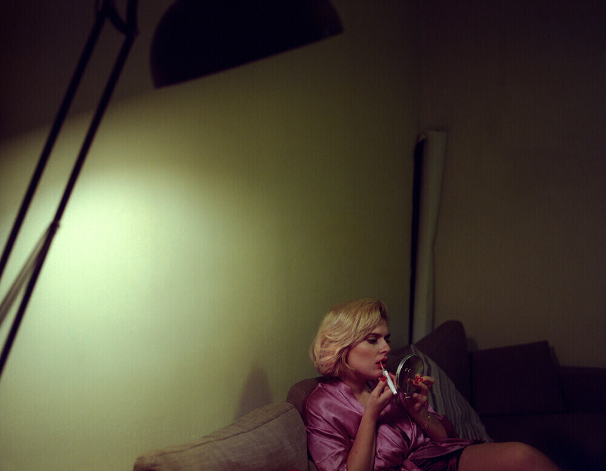
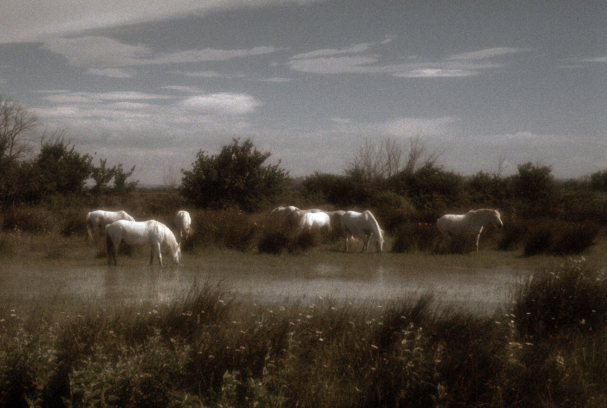

Хенрик Пурьенн: о красивых девушках и бесконечном лете
Cameralabs
5 февраля 2022

Хенрик Пурьенн направляет объектив за пределы реальной жизни, в сторону фантазий о красивых девушках, пляжной неге и бесконечном лете. Зачастую его творчество напоминает Playboy 1970-х. Искрящиеся ретро эстетикой фотографии Пурьенна полны соблазна, романтики и чувственности.Он известен тем, что фотографирует девушек в непринуждённой обстановке на плёнку. Пурьенн снимает глазами поклонника и вуайериста, но его сцены не смущают зрителя, а скорее...
Иэн Хоуорт: цвет одиночества
Cameralabs
1 февраля 2022

«Мне нравится идея создавать миры, которые люди воспринимали бы как знакомые, но находили слегка тревожными из-за пустоты», - размышляет о своих кинематографических снимках фотограф Иэн Хоуорт (Ian Howorth). Одиночество для Иэна стало лейтмотивом его художественного высказывания. Родившись в Перу, сменив три страны, девять домов, прежде чем осесть в Англии, Иэн интуитивно пытается заполнить чувство, когда ты «ниоткуда», собрав из случайных обрывков...
Роберт Фарбер: фотографии мастера романтического настроения
Cameralabs
28 января 2022

В своём творчестве Роберт Фарбер сумел объять разные жанры – от обнажённой натуры и модной фотографии до морских пейзажей, городских сцен и натюрмортов. Всё разнообразие сюжетов в своих работах он мастерски напитывает живописным и романтическим духом. Даже его рекламные кадры неотличимы от художественных.Роберт Фарбер (Robert Farber; 1944) родом из Нью-Джерси. До фотографии интересовался искусством, занимался живописью и изучал маркетинг. О том, как в его жизнь пришла фотосъёмка Фарбер вспоминает...